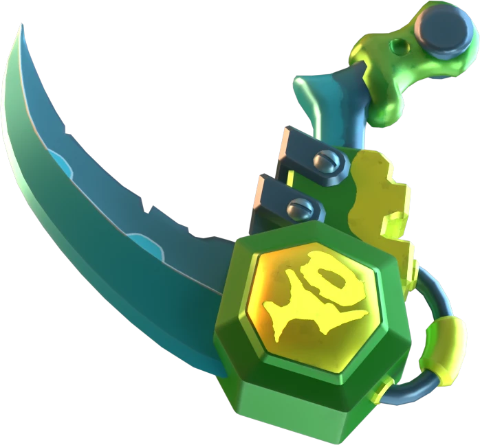
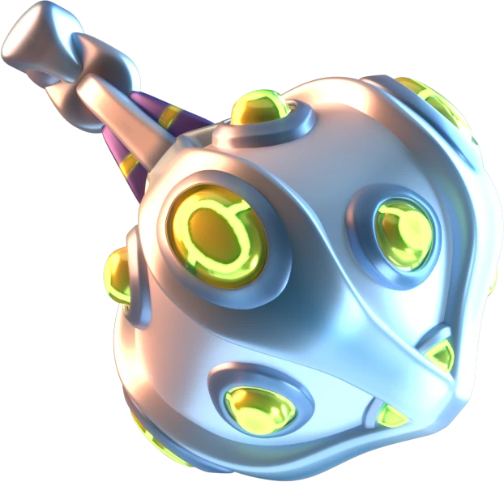
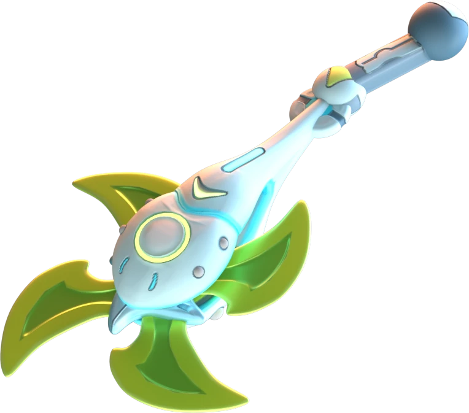

Böceklerin en korkusuzu, cüssesine bakmadan her şeye saldırabilen peygamber devesi, kamufle olup sabırla avını bekler. Böyle bir canlıyı da suikastçi bir robot olarak arenada görmek yakışırdı. Gerçek hayatta yavaş olsa da arenanın en hızlılarından olacak şekilde tasarlanacak ve beklenmedik anlarda rakiplerini tek tek avlayacaktı.
Silahlar
Scythe

Mace

Shuriken

Anubis, tırpanının gücünü en iyi şekilde gösterebilecek robotu bulmuştu. Ayrıca iki koluna birden takabilecekti. Robotun özellikleriyle de birleşince hızla rakiplerine yaklaşıp onları arenadan süpüren ölümcül bir silaha dönüşecekti. Anubis’in adı da ölümle anılmaya devam edecekti. Tek farkı artık koruyan tarafta olmayacak olmasıydı.
Herkül’ün sopasıyla laboratuvara giden Asteria, bir yandan fikrini tartıyordu. Herkül’ün sopasını yıldız uçları ile güçlendirerek bir gürz tasarlayacaktı. Bu şekilde tek bir vuruşta muazzam bir enerji yayılacaktı. Ayrıca bu enerji patlamasını kullanarak kendini fırlatabilecek ve rakiplerinin üstüne ölüm gibi inebilecekti. Evet, kesinlikle muazzam olacaktı. Bu düşünceyle adımlarını hızlandırdı.
Zeus, Crius’un yanına gelip ona gücünü bahşetmesini istedi. Crius ise ailesini korumak için bu işe karışmak istemiyordu. Zeus ise onun ailesini koruma altına alacağını ve onu tehdit edecek herkesi yok edebileceğini söyledi. Crius da karşılığında yeni silahını, hızını ve gücünü verdi. Bu testeremsi silah ve en güçlü titan Crius’un özelliklerinin birleşiminden çıkacak ürünü, Zeus bile hayal edemiyordu